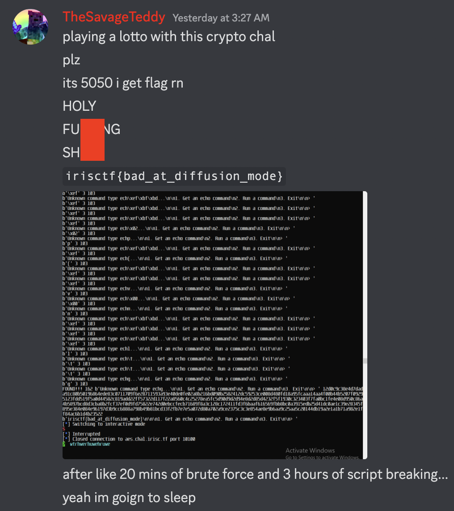
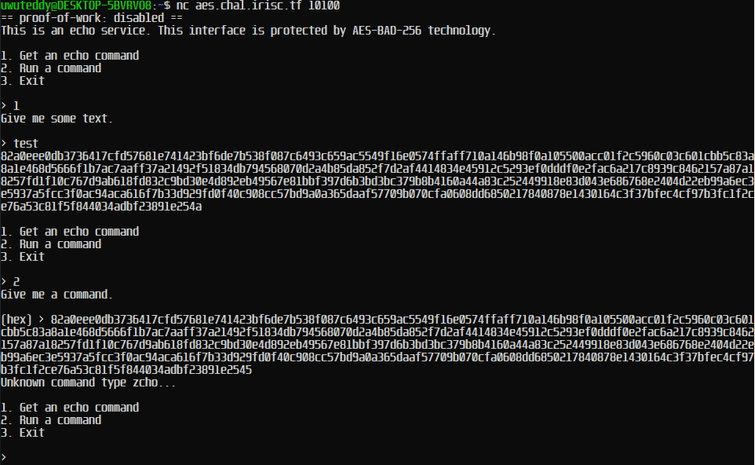
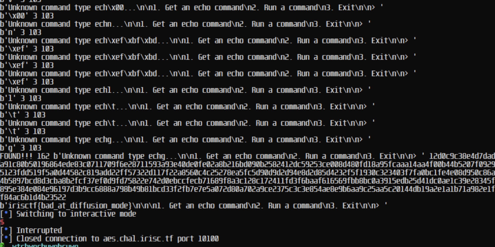

Crypto Writeups - IrisCTF 2023
Crypto Writeups - IrisCTF 2023

Overview⌗
I solved 4/6 crypto challenges in IrisCTF 2023, here are the writeups for them.
Challenges (dynamic scoring):
babynotrsabysera- 145 solvesbabymixupbysera- 98 solvesNonces and Keysbylambda- 53 solvesAES-BAD-256bysera- 18 solves
babynotrsa - 145 solves⌗
Everyone knows RSA, but everyone also knows that RSA is slow. Why not just use a faster operation than exponentiation?
We are given a source and output:
from Crypto.Util.number import getStrongPrime
# We get 2 1024-bit primes
p = getStrongPrime(1024)
q = getStrongPrime(1024)
# We calculate the modulus
n = p*q
# We generate our encryption key
import secrets
e = secrets.randbelow(n)
# We take our input
flag = b"irisctf{REDACTED_REDACTED_REDACTED}"
assert len(flag) == 35
# and convert it to a number
flag = int.from_bytes(flag, byteorder='big')
# We encrypt our input
encrypted = (flag * e) % n
print(f"n: {n}")
print(f"e: {e}")
print(f"flag: {encrypted}")
n: 21429933885346644587620272790089165813353259223649897308397918491861562279767580488441831451651834802520437234248670652477414296159324726172158330221397420877323921934377321483041598028053870169281419856238830264612049920637819183013812186448416408328958360799645342598727238977986741643705720539702955864527935398839069236768630867447760912744208154645904678859979378604386855741350220991958191408182147658532111413386776058224418484895056146180001830405844881486308594953615999140110712045286000170660686758188247928230655746746482354748673482506070246808187808961599576834080344066055446605664648340486804023919467
e: 10788856448030235429585145974385410619185237539198378911887172763282204686697141640582780419040340318300048024100764883750608733331571719088729202796193207904701854848679412033514037149161609202467086017862616635522167577463675349103892366486246290794304652162107619408011548841664240624935414339021041162505899467159623692906986841033101688573177710503499081107294555688550493634416552587963816327790111808356639558596438537569271043190414208204773219496030644456745185896540608008662177117212000718802474957268532153146989410300300554162811564064457762004188326986236869603714437275058878379647196886872404148116134
flag: 3954523654845598592730156937269688140867480061118457307435945875579028695730063528424973907208923014508950419982702682082417623843946231057553311028711409093751376287876799688357176816093484535703797332422565021382453879908968161161537921292725907853309522100738603080298951279637316809695591295752657105226749125868510570125512146397480808774515489938198191435285342823923715673372695893409325086032930406554421670815433958591841773705563688270739343539481283865883427560667086249616210745997056621098406247201301461721906304555526293017773805845093545204570993288514598261070097976786800172141678030841959348372097
Looking at the source, it looks like standard RSA, but noticed on this line:
# We encrypt our input
encrypted = (flag * e) % n
the “encryption” is not RSA, as it uses multiplication instead of exponentiation. This means we can calculate an inverse element \(k\) for \(e\) and \(n\) where \(e \times k = 1 \pmod{n}\).
Then we multiply this (\(k\)) by encrypted mod n to recover the flag.
from Crypto.Util.number import long_to_bytes
n = 21429933885346644587620272790089165813353259223649897308397918491861562279767580488441831451651834802520437234248670652477414296159324726172158330221397420877323921934377321483041598028053870169281419856238830264612049920637819183013812186448416408328958360799645342598727238977986741643705720539702955864527935398839069236768630867447760912744208154645904678859979378604386855741350220991958191408182147658532111413386776058224418484895056146180001830405844881486308594953615999140110712045286000170660686758188247928230655746746482354748673482506070246808187808961599576834080344066055446605664648340486804023919467
e = 10788856448030235429585145974385410619185237539198378911887172763282204686697141640582780419040340318300048024100764883750608733331571719088729202796193207904701854848679412033514037149161609202467086017862616635522167577463675349103892366486246290794304652162107619408011548841664240624935414339021041162505899467159623692906986841033101688573177710503499081107294555688550493634416552587963816327790111808356639558596438537569271043190414208204773219496030644456745185896540608008662177117212000718802474957268532153146989410300300554162811564064457762004188326986236869603714437275058878379647196886872404148116134
encrypted = 3954523654845598592730156937269688140867480061118457307435945875579028695730063528424973907208923014508950419982702682082417623843946231057553311028711409093751376287876799688357176816093484535703797332422565021382453879908968161161537921292725907853309522100738603080298951279637316809695591295752657105226749125868510570125512146397480808774515489938198191435285342823923715673372695893409325086032930406554421670815433958591841773705563688270739343539481283865883427560667086249616210745997056621098406247201301461721906304555526293017773805845093545204570993288514598261070097976786800172141678030841959348372097
k = pow(e,-1,n)
flag = (encrypted * k) % n
print(long_to_bytes(flag))
irisctf{discrete_divide_isn't_hard}
babymixup - 98 solves⌗
I encrypted a public string and the flag with AES. There’s no known key recovery attacks against AES, so you can’t decrypt the flag.
Given source and output:
from Crypto.Cipher import AES
import os
key = os.urandom(16)
flag = b"flag{REDACTED}"
assert len(flag) % 16 == 0
iv = os.urandom(16)
cipher = AES.new(iv, AES.MODE_CBC, key)
print("IV1 =", iv.hex())
print("CT1 =", cipher.encrypt(b"Hello, this is a public message. This message contains no flags.").hex())
iv = os.urandom(16)
cipher = AES.new(key, AES.MODE_CBC, iv )
print("IV2 =", iv.hex())
print("CT2 =", cipher.encrypt(flag).hex())
IV1 = 4ee04f8303c0146d82e0bbe376f44e10
CT1 = de49b7bb8e3c5e9ed51905b6de326b39b102c7a6f0e09e92fe398c75d032b41189b11f873c6cd8cdb65a276f2e48761f6372df0a109fd29842a999f4cc4be164
IV2 = 1fe31329e7c15feadbf0e43a0ee2f163
CT2 = f6816a603cefb0a0fd8a23a804b921bf489116fcc11d650c6ffb3fc0aae9393409c8f4f24c3d4b72ccea787e84de7dd0
As shown, key and iv are completely random, but key is re-used for both encryptions of P1 (b"Hello, this ...") and P2 (the flag).
We also spot an error with the code:
cipher = AES.new(iv, AES.MODE_CBC, key)
...
cipher = AES.new(key, AES.MODE_CBC, iv )
The key and iv are swapped for the first operation! For reference, the function is supposed to be AES.new(key, AES mode, IV). Let’s see how we can exploit this.
With all block cipher puzzles, it helps to use a diagram that illustrates their decryption scheme. In this case it’s AES-CBC.

We have IV1 and IV2 from the output, but IV1 is actually the key used to encrypt CT1. We can figure out the actual IV for CT1 by looking at the diagram - notice that to decrypt, CT1 is decrypted using the key then XOR’ed with the IV, and since we know P1 (the plaintext), by properties of XOR, figuring out the IV is just decrypting without an IV then XORing with the plaintext.
Recall that real_IV1 is actually the key used to encrypt our flag CT2, so we now have the key to decrypt the flag.
from Crypto.Cipher import AES
from binascii import unhexlify
def xor(a,b):
return bytes([x^y for x,y in zip(a,b)])
IV1 = '4ee04f8303c0146d82e0bbe376f44e10'
CT1 = 'de49b7bb8e3c5e9ed51905b6de326b39b102c7a6f0e09e92fe398c75d032b41189b11f873c6cd8cdb65a276f2e48761f6372df0a109fd29842a999f4cc4be164'
IV2 = '1fe31329e7c15feadbf0e43a0ee2f163'
CT2 = 'f6816a603cefb0a0fd8a23a804b921bf489116fcc11d650c6ffb3fc0aae9393409c8f4f24c3d4b72ccea787e84de7dd0'
cipher = AES.new(unhexlify(IV1), AES.MODE_CBC, b"\x00"*16)
real_IV1 = xor(cipher.decrypt(unhexlify(CT1)), b"Hello, this is a public message. This message contains no flags.")
real_IV1 = real_IV1[:16] # only first block, IVs are 16 bytes
cipher = AES.new(real_IV1, AES.MODE_CBC, unhexlify(IV2))
print(cipher.decrypt(unhexlify(CT2)))
irisctf{the_iv_aint_secret_either_way_using_cbc}
Nonces and Keys - 53 solves⌗
Because of our revolutionary AES-128-OFB technology we have encrypted your user data so securely that even with the key (k=0x13371337133713371337133713371337) evil hackers can’t read out the passwords!!!
We are provided with an encrypted sqlite3 file challenge_enc.sqlite3. Our goal is to decrypt it.
Already given in the challenge description, the key is 0x13371337133713371337133713371337 and the file is encrypted using AES-128-OFB. Again, we can pull up a diagram.

AES-OFB being a stream cipher, encryption and decryption are identical. But the more important thing to notice is that we can recover the stream for cipher using known plaintext! Notice that if we have a block of known plaintext P1 and ciphertext C1, P1 xor C1 will give us the stream (Key and IV encryption). Furthermore, this stream is used as the “IV” for the next block, and since we have the key already, we can decrypt every subsequent block.
Now all we need is a block of known plaintext. A quick google search brings us to the sqlite3 magic bytes 53514c69746520666f726d6174203300, which is conveniently 16 bytes - a full block!
From there we script the decryption of the rest of the blocks, and CTRL+F the flag.
from Crypto.Cipher import AES
from binascii import unhexlify
with open("challenge_enc.sqlite3", 'rb') as f:
enc = f.read()
def xor(a,b):
return bytes([x^y for x,y in zip(a,b)])
plaintext = b""
key = unhexlify("13371337133713371337133713371337")
p1 = unhexlify("53514c69746520666f726d6174203300") # sqlite3 magic bytes
plaintext += p1
# loop that keeps using the previous stream as IV and decrypting
for i in range(0, len(enc)//16):
c1 = enc[i*16:i*16+16]
print(p1, len(p1))
e1 = xor(c1, p1)
c2 = enc[i*16+16:i*16 + 32]
ofb = AES.new(key, AES.MODE_OFB, e1)
p1 = ofb.decrypt(c2)
print(p1)
plaintext += p1
print(plaintext)
with open("decrypted.sqlite3", 'wb') as f:
f.write(plaintext)
irisctf{g0tt4_l0v3_s7re4mciph3rs}
AES-BAD-256 - 18 solves⌗
I heard that some common block cipher modes have lots of footguns - using none (ECB) results in the legendary ECB Penguin, while others are vulnerable to bit flipping and padding attacks, so I made my own that would never fall to such a technique.
I’m going to admit - I cheesed this challenge quite hard with bruteforce, but in my defense it was 3am…

from Crypto.Cipher import AES as AES_BLOCK
import secrets
import random
AES_BLOCK_SIZE = 16
MODE_BLOCK_SIZE = AES_BLOCK_SIZE * 16
KEY = secrets.token_bytes(AES_BLOCK_SIZE)
AES = AES_BLOCK.new(KEY, AES_BLOCK.MODE_ECB)
import random
random.seed(KEY)
PERMUTATION = list(range(AES_BLOCK_SIZE))
random.shuffle(PERMUTATION)
def encrypt(inp):
inp = inp.ljust(MODE_BLOCK_SIZE, b"\x00")
assert len(inp) % MODE_BLOCK_SIZE == 0
data = b""
for block in range(0, len(inp), MODE_BLOCK_SIZE):
for i in range(AES_BLOCK_SIZE):
data += bytes(inp[block+j*AES_BLOCK_SIZE+PERMUTATION[i]] for j in range(MODE_BLOCK_SIZE // AES_BLOCK_SIZE))
return AES.encrypt(data)
def decrypt(inp):
assert len(inp) % MODE_BLOCK_SIZE == 0
inp = AES.decrypt(inp)
data = b""
for block in range(0, len(inp), MODE_BLOCK_SIZE):
for j in range(MODE_BLOCK_SIZE // AES_BLOCK_SIZE):
for i in range(AES_BLOCK_SIZE):
data += bytes([inp[block + PERMUTATION.index(i) * (MODE_BLOCK_SIZE // AES_BLOCK_SIZE) + j]])
return data
import json
def make_echo(inp):
data = json.dumps({"type": "echo", "msg": inp}).encode(errors="ignore")
assert len(data) < 2**32
return len(data).to_bytes(length=2, byteorder="little") + data
def run_command(inp):
inp = decrypt(inp)
length = int.from_bytes(inp[:2], byteorder="little")
if length + 2 >= len(inp):
return "Invalid command"
# Show me what you got
command = inp[2:length+2].decode("ascii", errors="replace")
try:
command = json.loads(command, strict=False)
except Exception as e:
return "Invalid command"
if "type" not in command:
return "No command type"
match command["type"]:
case "echo":
return command.get("msg", "Hello world!")
case "flag":
with open("/flag", "r") as f:
return f.read()
case other:
return f"Unknown command type {command['type']}..."
BANNER = "This is an echo service. This interface is protected by AES-BAD-256 technology."
MENU = """
1. Get an echo command
2. Run a command
3. Exit
"""
def main():
print(BANNER)
while True:
print(MENU)
command = input("> ")
match command:
case "1":
print("Give me some text.\n")
data = input("> ")
print(encrypt(make_echo(data)).hex())
case "2":
print("Give me a command.\n")
data = bytes.fromhex(input("(hex) > "))
print(run_command(data))
case other:
print("Bye!")
exit(0)
if __name__ == "__main__":
main()
Okay, I didn’t go through most the code but the important thing is that this is a modification of AES-ECB with random block orders.
Connecting to remote and testing a bit, I tried flipping some bits:
and yep, it does indeed look vulnerable to bit-flipping attacks! Notice echo -> zcho
The server generates us a ciphertext of command echo with some data, and our goal is to flip bits to make the command flag, which gives us the flag.
match command["type"]:
case "echo":
return command.get("msg", "Hello world!")
case "flag":
with open("/flag", "r") as f:
return f.read()
case other:
return f"Unknown command type {command['type']}..."
What’s super useful is that if the command is not valid, it tells us what our command was! Essentially, we get feedback about what bit we flipped something to.
Now, remember the modification - block orders are random, therefore we will script to flip bits from every block and observe the feedback to see if we flipped the right bits. Our goal is to figure out which blocks need to be flipped to change the echo text.
from pwn import *
from binascii import unhexlify, hexlify
def runcmd(thehex):
r.sendline(b"2")
r.recv()
r.sendline(hexlify(thehex))
return r.recv()
def getecho(txt):
r.sendline(b"1")
r.recv()
r.sendline(txt)
a=r.recvline().strip()
print(a)
return unhexlify(a)
def flipbit(str, pos):
return bytes([[a,a^0xff][c==pos] for c, a in enumerate(str)])
r = remote('aes.chal.irisc.tf', 10100)
r.recv()
r.recv()
validecho = getecho("hello")
r.recv()
indexes = [None,None,None,None]
for i in range(0, len(validecho), 16):
dat = runcmd(flipbit(validecho, i))
if b"Unknown command type" in dat:
if dat[21] == ord("e"):
if dat[22] == ord("c"):
if dat[23] == ord("h"):
if dat[24] == ord("o"):
pass
else:
indexes[3] = i
else:
indexes[2] = i
else:
indexes[1] = i
else:
indexes[0] = i
print(indexes)
Some horrifying python code, but it does the job. Like I said, 3am and coding don’t mix well.
Anyways, now that we have the indexes of blocks that when flipped, change a character of echo, we now can either:
- read the source code properly to figure how to flip them into the text
flag - OR… brute force flipping the bit into every byte possible to figure which ones will result in the text
flag
guess which one I chose…
So we have positions of bits that when flipped, change a character at a position. We can just:
- go through each position, e.g. the position that affects
efromecho, and change that bit into something. - observe the response - does the character
eget flipped intoffromflag? if not, change the bit into something else. - after doing so for all the bits, we should get the flag!
Here’s the horrendous code that does this:
from pwn import *
from binascii import unhexlify, hexlify
def runcmd(thehex):
r.sendline(b"2")
r.recv()
r.sendline(hexlify(thehex))
return r.recv()
def getecho(txt):
r.sendline(b"1")
r.recv()
r.sendline(txt)
a=r.recvline().strip()
print(a)
return unhexlify(a)
def flipbit(str, pos):
return bytes([[a,a^0xff][c==pos] for c, a in enumerate(str)])
r = remote('aes.chal.irisc.tf', 10100)
r.recv()
r.recv()
validecho = getecho("hello")
r.recv()
indexes = [None,None,None,None]
for i in range(0, len(validecho), 16):
dat = runcmd(flipbit(validecho, i))
if b"Unknown command type" in dat:
if dat[21] == ord("e"):
if dat[22] == ord("c"):
if dat[23] == ord("h"):
if dat[24] == ord("o"):
pass
else:
indexes[3] = i
else:
indexes[2] = i
else:
indexes[1] = i
else:
indexes[0] = i
finalecho = list(validecho)
for count, flagchar in enumerate(b"flag"):
foundit = False
for second in range(0, 256):
for test in range(0, 256):
testecho = list(validecho)
testecho[indexes[count]] = test
testecho[indexes[count]] ^=second
testecho = bytes(testecho)
dat = runcmd(testecho)
print(dat)
print(dat[21+count:22+count], count, flagchar)
if dat[21+count:22+count] == bytes([flagchar]) and b"Unknown command type" in dat:
print("FOUND!!!", test, dat, testecho.hex()) # good dopamine
finalecho[indexes[count]] = test
foundit = True
break
if foundit:
break
dat = runcmd(bytes(finalecho))
print(dat)
The great thing is there is a slight chance that the bit it’s choosing to flip never matches the character needed, so this was like gambling until 4 of them matched. But that’s what you get for brute forcing.
As you can see, after brute forcing for the final g of flag, the full flipped ciphertext was sent and we got the flag!!!
irisctf{bad_at_diffusion_mode}
Conclusion⌗
I enjoyed these crypto challenges as they weren’t math oriented, although they were on the easy side, they were still fun and enjoyable to solve! Kudos to the challenge authors sera and lambda for making these!